Universitat per a Majors
Word
Iniciación al editor de textos de Microsoft
Apreta la tecla → para avanzar.

El USB (Universal Serial Bus) es la manera más cómoda y sencilla que tenemos para conectar dispositivos al ordenador.
Tenemos que seguir los siguientes pasos para conectar una cámara de fotos al ordenador:
En lugar de conectar toda la cámara al ordenador, podemos extraer la tarjeta de memoria de la cámara y conectarla al ordenador con un lector de memorias, o un adaptador.
Una vez conectada la cámara por USB al ordenador, podemos encenderla para que el sistema operativo la reconozca. Esperaremos hasta que nos diga que ya ha terminado la instalación del nuevo dispositivo.
Windows XP nos informará de que ha detectado un nuevo dispositivo, y nos preguntará qué queremos hacer. Si vamos al explorador de archivos podremos ver el contenido de la tarjeta de memoria de la cámara como una unidad lógica más.
Al conectar un dispositivo Windows nos preguntará qué queremos hacer (no siempre). Podemos cerrar la ventana si queremos.
La memoria de la cámara tiene una estructura de archivos similar a las que ya venimos utilizando.
 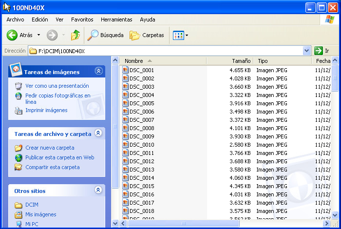
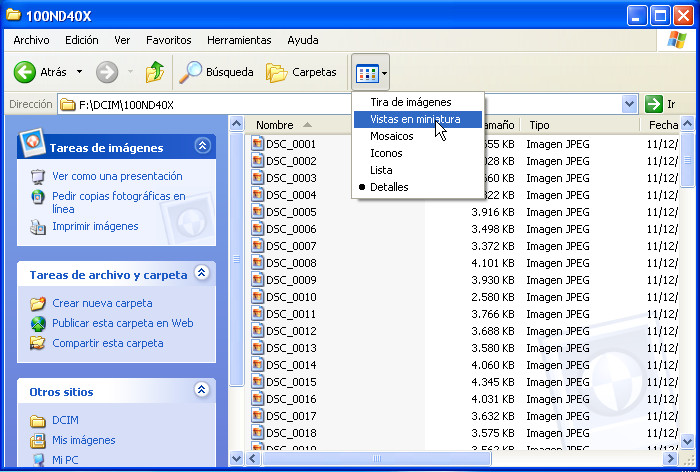
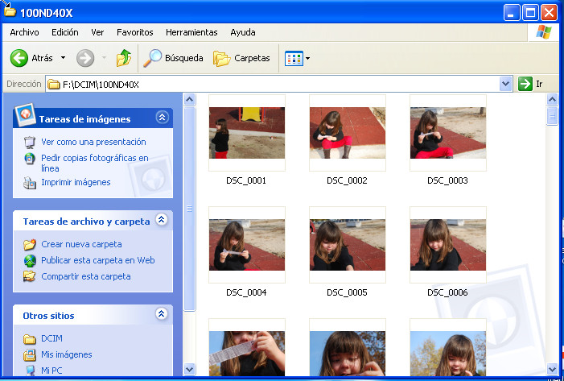
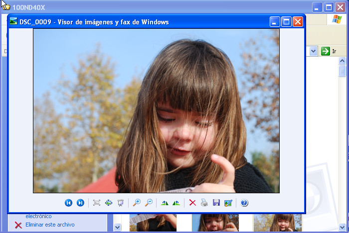
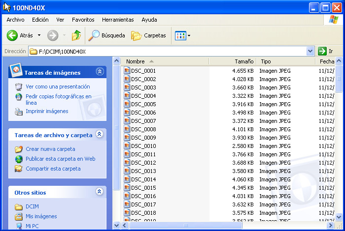
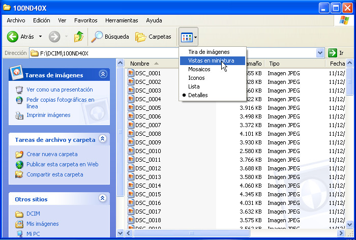
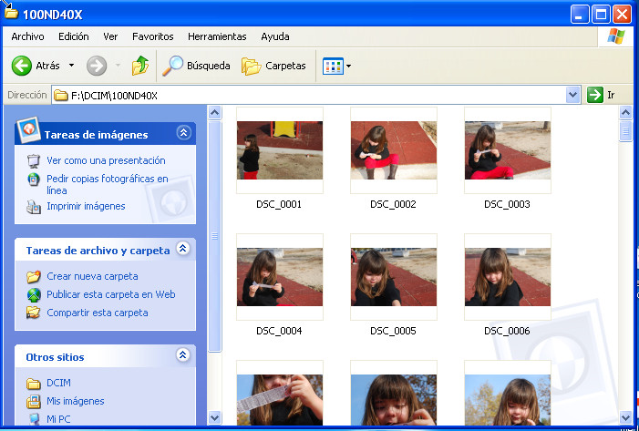
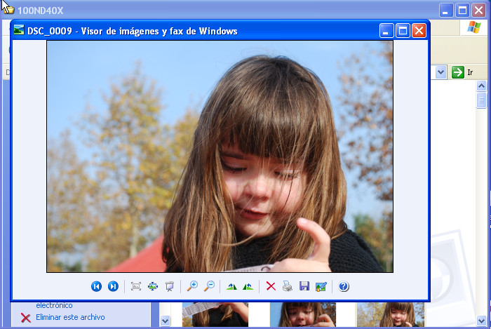
Ya podemos ver las fotos de la cámara, pero ahora queremos guardarlas en el ordenador. Deberemos copiar/mover las fotos desde la tarjeta de memoria a una carpeta del ordenador.
 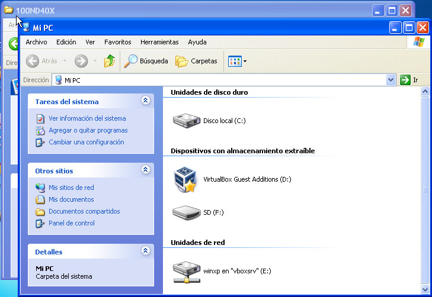
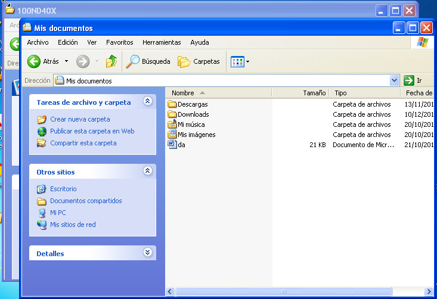
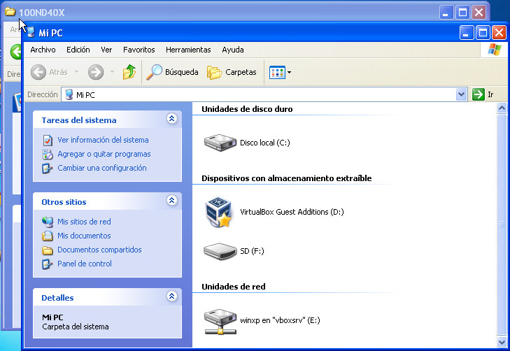
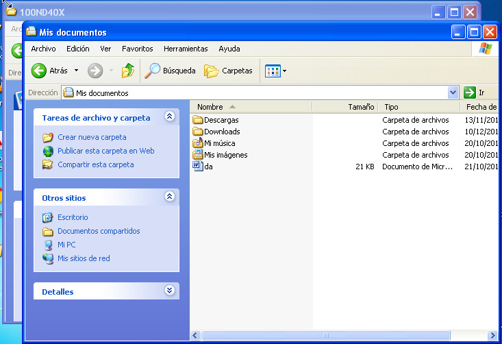
 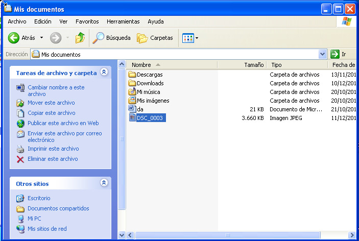
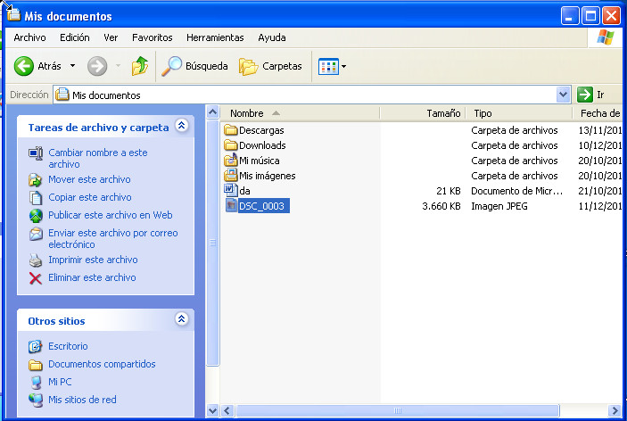
Hemos visto cómo extraer una foto de la cámara y copiarla al escritorio, o a la carpeta "Mis Documentos". Veamos ahora cómo enviar una o varias fotos por correo electrónico.
 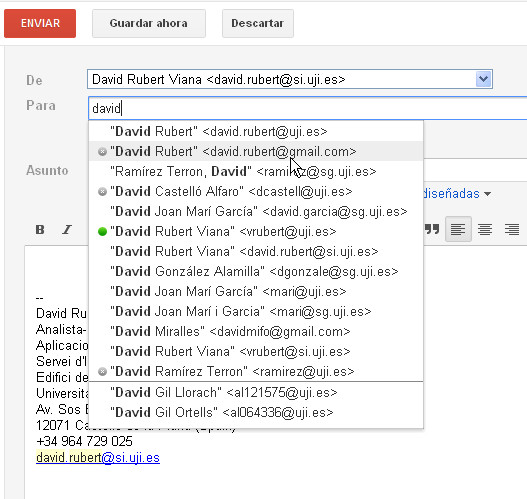
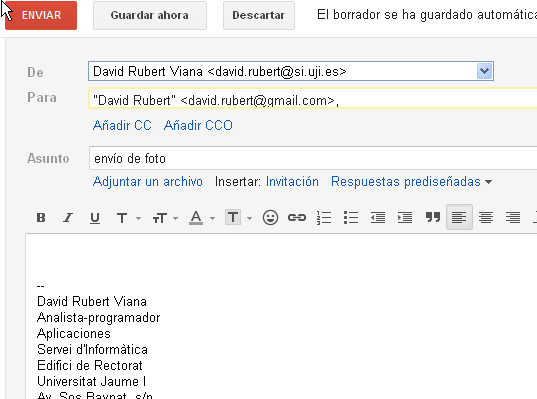
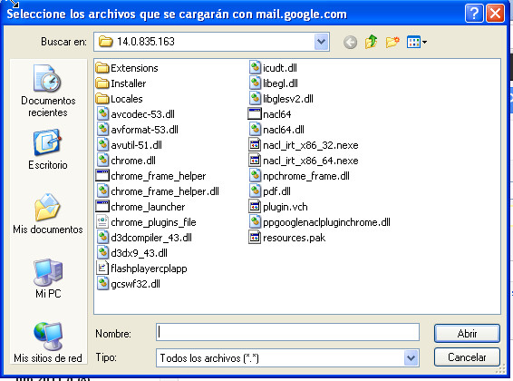
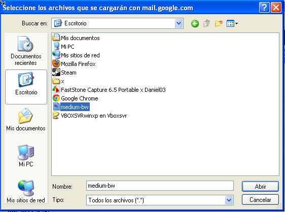
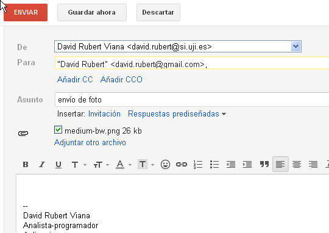
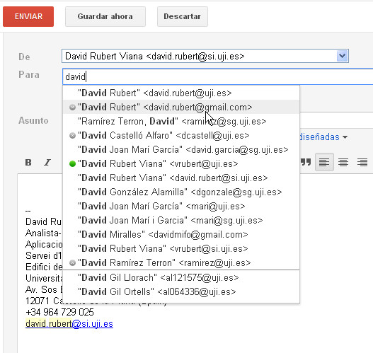
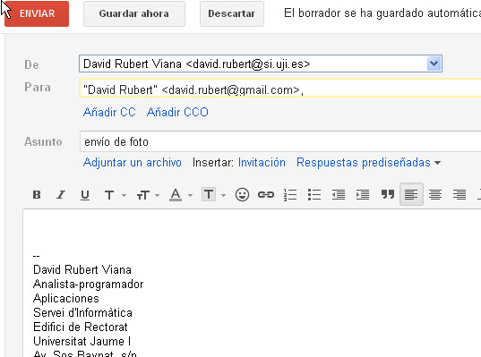
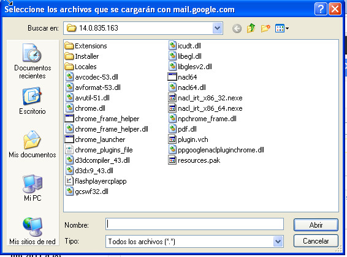
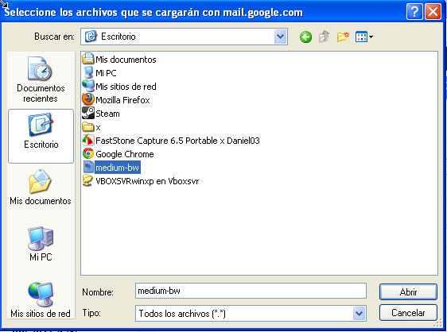
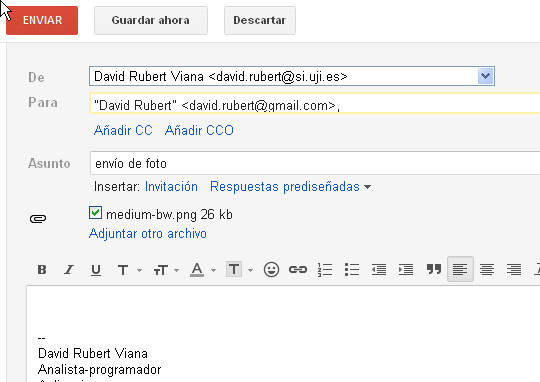